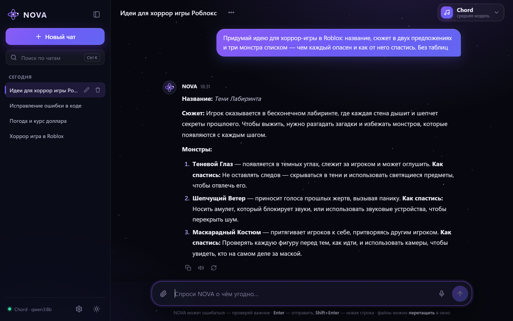
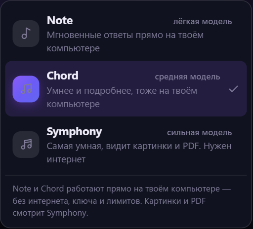
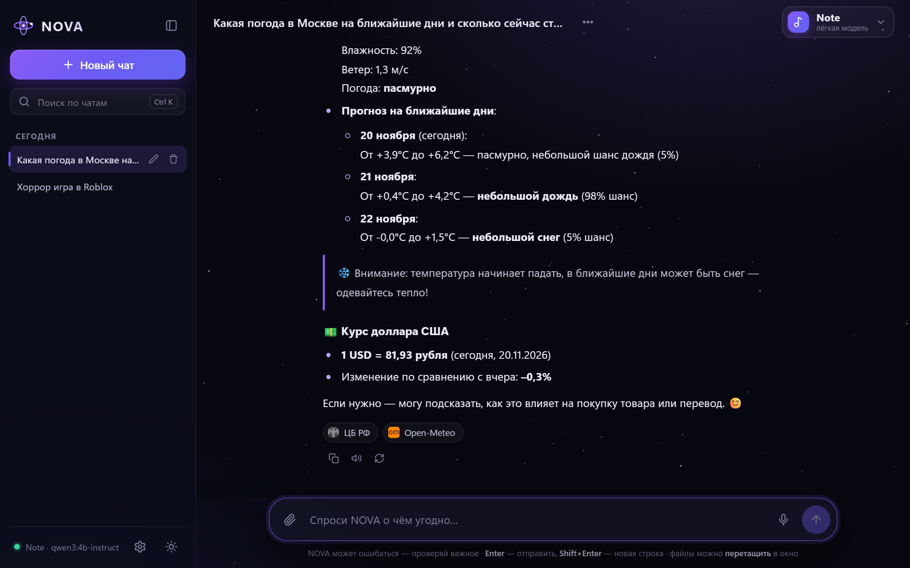
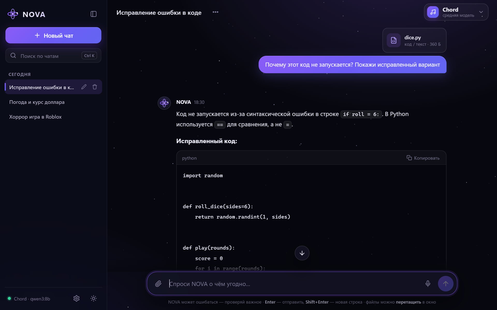
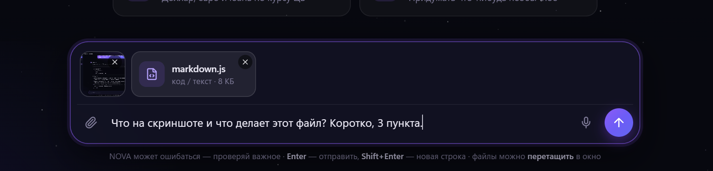
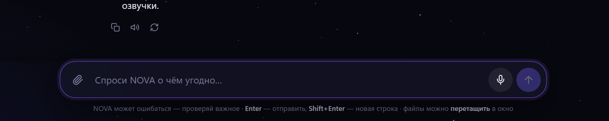
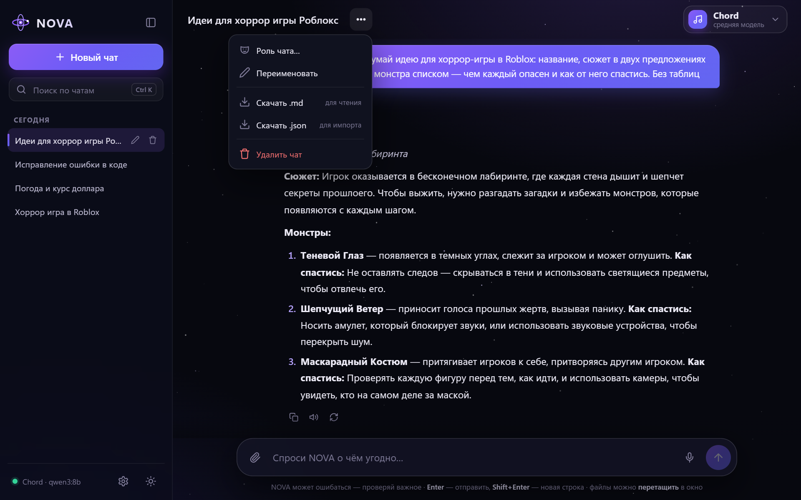
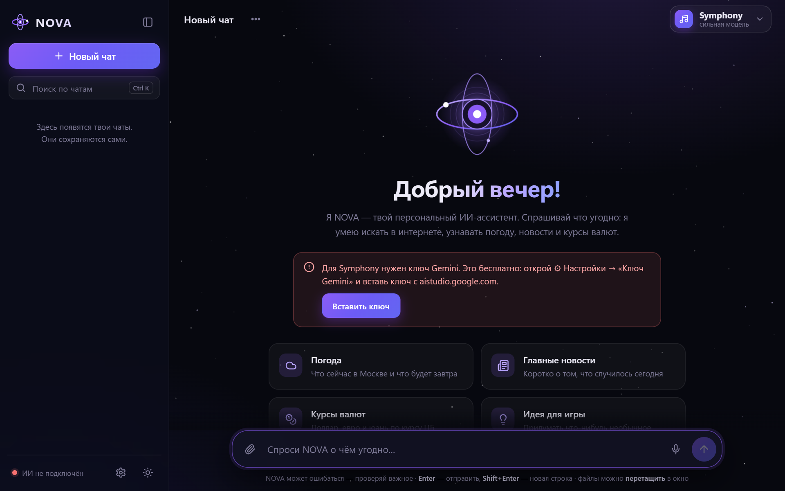

лёгкая
Note
Отвечает почти мгновенно. Хватает для вопросов, идей, переводов и простого кода.
- Где работает
- на твоём ПК
- Интернет
- не нужен
- Лимиты
- нет
- Скачать
- 2,5 ГБ
- Видеокарта
- от 6 ГБ
Модель Qwen3 4B, запускается через Ollama.
Note и Chord думают прямо на твоей видеокарте: без интернета, ключей и лимитов. Symphony подключает Gemini от Google, когда нужно посмотреть картинку или PDF. Чаты хранятся только у тебя на компьютере.

Настоящий ответ Chord. Он целиком посчитан на видеокарте RTX 2060 Super, интернет для него не нужен.
Названия не случайные: от одной ноты до целого оркестра. Чем больше модель, тем подробнее и умнее ответы.
Отвечает почти мгновенно. Хватает для вопросов, идей, переводов и простого кода.
Модель Qwen3 4B, запускается через Ollama.
Умнее и подробнее. Хорошо пишет код, объясняет и придумывает сюжеты.
Модель Qwen3 8B. На RTX 2060 Super печатает около 47 токенов в секунду.
Самая умная. Видит картинки, скриншоты и PDF. Если одна модель Google занята, сама берёт другую.
Gemini от Google, бесплатный ключ. В России нужен VPN.

Кнопка с моделью стоит в правом верхнем углу. Переключать можно прямо посреди разговора: новая модель видит всю переписку.
| Возможность | Noteлёгкая | Chordсредняя | Symphonyсильная |
|---|---|---|---|
| Работает без интернета | ✓ | ✓ | — |
| Работает в России без VPN | ✓ | ✓ | — |
| Без ключа и лимитов | ✓ | ✓ | — |
| Погода, новости, курсы, поиск * | ✓ | ✓ | ✓ |
| Читает код, тексты и Word | ✓ | ✓ | ✓ |
| Видит картинки и PDF | — | — | ✓ |
| Не нужна мощная видеокарта | — | — | ✓ |
* Когда интернет есть. Без него Note и Chord отвечают из того, что знают сами.
Видеокарты хватает, чтобы Chord отвечала подробно и без лимитов. Для самых сложных вопросов есть Symphony.
Что поставить: Ollama и команду ollama pull qwen3:8b.
Note и Chord живут на твоём компьютере, поэтому им не нужны ни сеть, ни ключ. Вот что работает, когда интернета нет.
В России Note и Chord работают без VPN. Вопросы к ним вообще не уходят с компьютера, кроме поисковых запросов, когда модель сама идёт в интернет.
Ответ печатается потоком: первые слова появляются почти сразу. Все скриншоты ниже сняты с настоящих ответов.
NOVA сама решает, когда пора заглянуть в сеть, и показывает, откуда взяла ответ. Так умеют все три модели.

До пяти файлов сразу, скриншот вставляется через Ctrl+V. Если прислать две версии одного файла, NOVA сравнит их по пунктам.
.py, .js, .lua, .html и десятки других

Нажми на микрофон: полоски прыгают в такт голосу, а текст появляется в поле. Ответы NOVA читает вслух, а в настройках включается автоозвучка.

Один чат ведёт строгий программист, другой придумывает сюжеты для игр. Роль хранится вместе с чатом, а все чаты сохраняются сами.
.md или .json и загрузить обратно
Первые три шага занимают около минуты, после них работает Symphony. Четвёртый добавляет Note и Chord, тут всё зависит от скорости интернета: модели весят 2,5 и 5,2 ГБ.
Нажми «Скачать NOVA» и распакуй архив в любую папку, например Документы\NOVA.
Дважды щёлкни Install NOVA.bat. Он проверит Python, поставит библиотеку Gemini и создаст ярлык на рабочем столе.
Если появится синее окно «Windows защитила компьютер», нажми «Подробнее», потом «Выполнить в любом случае».
Он нужен для Symphony и бесплатный: aistudio.google.com/apikey, вход через Google-аккаунт, кнопка «Create API key». NOVA попросит его при первом запуске.
Установи Ollama с ollama.com и скачай модели командами ниже. Можно взять только одну.
ollama pull qwen3:4b-instructNote · 2,5 ГБ
ollama pull qwen3:8bChord · 5,2 ГБ
Пока ключа нет, на стартовом экране висит подсказка с кнопкой «Вставить ключ». NOVA проверяет ключ настоящим запросом и сразу подключается. Без ключа можно сразу выбрать Note или Chord.
Нет Python? Установщик сам откроет страницу загрузки. При установке Python отметь галочку Add python.exe to PATH и запусти установщик ещё раз.

Да. У Note и Chord вообще нет лимитов, они работают на твоём железе. У Symphony есть бесплатный дневной лимит Google. Если он закончится, NOVA так и скажет, а лимит обновится на следующий день в 10–11 утра по Москве. Пока его нет, можно спрашивать Note и Chord.
Note и Chord работают без VPN, им вообще не нужен интернет. Symphony работает только через VPN: Google не пускает к Gemini из России. Если VPN выключен, NOVA покажет понятную ошибку, а не сломается.
Для Note лучше от 6 ГБ видеопамяти, для Chord от 8 ГБ. На видеокарте послабее модели тоже запустятся: Ollama посчитает часть на процессоре, просто ответы пойдут медленнее. Symphony работает на серверах Google, ей видеокарта не нужна.
Только у тебя на диске, в папке NOVA: чаты в chats, настройки в nova_settings.json, ключ в nova_key.json. С Note и Chord вопросы не покидают компьютер. С Symphony вопросы и вложения уходят в Google Gemini, чтобы получить ответ.
Windows так реагирует на любой скачанный файл .bat без цифровой подписи. Нажми «Подробнее» и «Выполнить в любом случае». Установщик открытый: его можно посмотреть в Блокноте до запуска.
Пока нет, NOVA работает только на Windows 10 и 11. Окно открывается через Microsoft Edge, который уже есть в Windows.
Загляни в файл nova_errors.log в папке NOVA, там записана причина. Для Symphony чаще всего помогает проверить интернет, VPN и ключ. Если Note или Chord пишут, что модель не скачана, выполни команду, которую покажет NOVA.
Скачай архив, запусти установщик и задай первый вопрос. Хоть с интернетом, хоть без.
Скачать NOVA .zip · 101 КБ